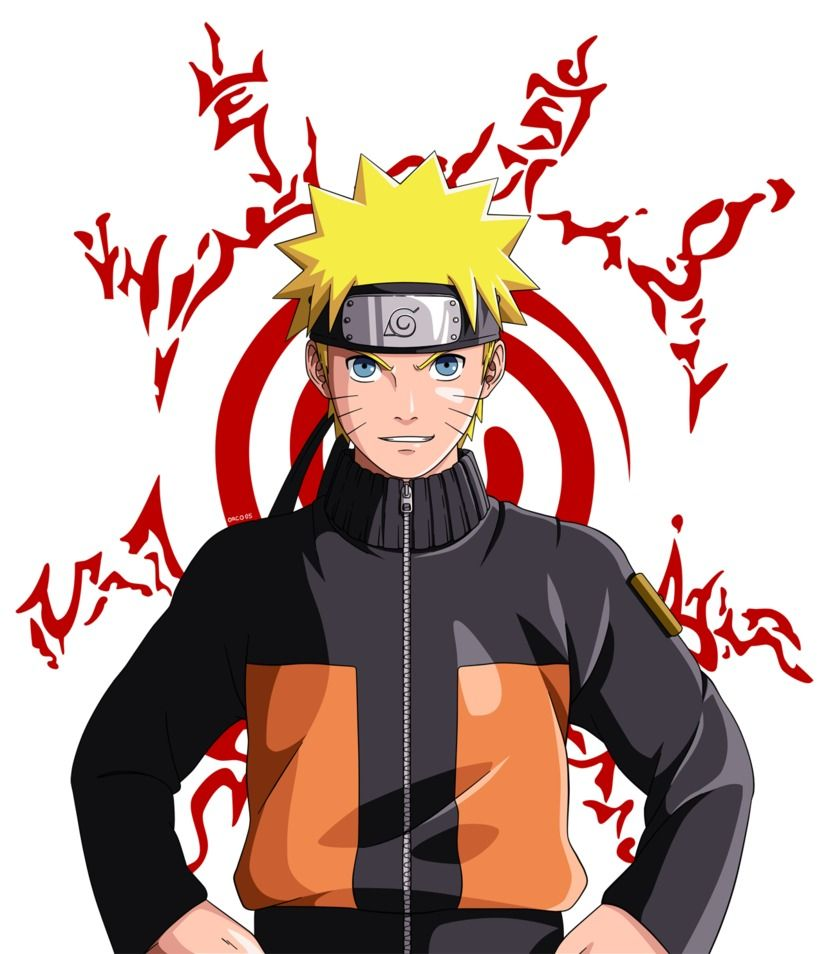
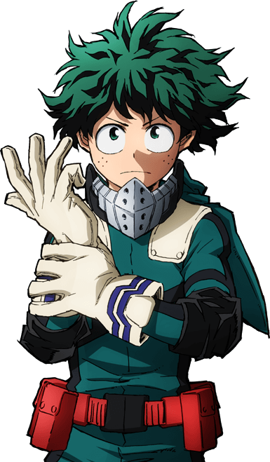
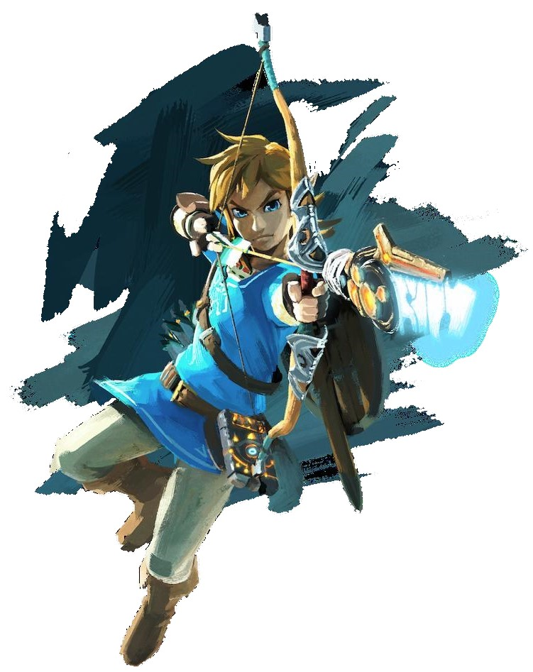
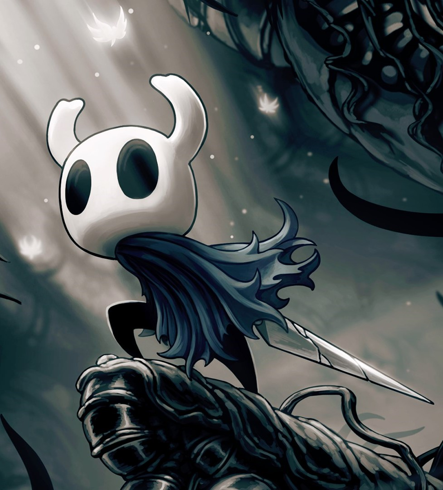

Gostos
O Enzo possui diversos gostos, está página irá mostra a maioria deles.
Anime
Uma das coisas que Enzo mais adora na vida é 'Anime'. Anime se refere à animação japonesa, a qual possui uma grande variedade de temas tais como comédia, terror, drama, ficção científica e entretém pessoas de todas as idades. Basicamente, animes são os desenhos animados produzidos no Japão. Para os japoneses os animes são todos os desenhos animados, independente da sua origem, nacional ou estrangeira. Para o mundo ocidental os animes são apenas os desenhos animados do Japão. O Anime que mais tocou Enzo e realmente fez parte da sua vida foi Naruto. Abaixo está listado outros animes além dos especificados.
- Death Note
- Mob Psycho 100
- Hunter X Hunter
Naruto
Naruto é uma série escrita e ilustrada por Masashi Kishimoto, que conta a história de vida de Naruto Uzumaki, um jovem ninja que busca por reconhecimento e deseja se tornar Hokage, o ninja líder de sua vila. O Anime é dividio em duas partes, a primeira parte se passa no período da pré-adolescência de Naruto, e a segunda parte se passa em sua adolescência até sua vida de jovem adulto. Por incrível que pareça, você emadurece junto ao Naruto. Enzo aprendeu que deve valorizar as pessoas, porque elas não duram para sempre e não há maneiras de trazê-las de volta, que para você ver a pessoa que você ama feliz, tudo bem em receber toda culpa por algo que você é inocente, que pelos amigos vale a pena até mesmo dar a vida, aprendeu a adimirar todas as pessoas, a não se importar com o que os outros pensam ou dizem, que sempre há esperança, que ódio gera mais ódio, que vale a pena enfrentar obstáculos, a fim de proteger o que você deseja, que não há idade que seja tarde de mais para mudanças e aprendizado, e Naruto ensinou a nunca abandonar as pessoas. Por fim, Naruto ensinou muitas coisas para seus fãs e seus significado vai muito além do que um apenas um 'desenho'.
O anime 'Naruto' é recheado de batalhas épicas, poderes monstruoso, personagens que roubam cena do protagosnista e reviravoltas surpreendetes que vão prender a atenção do telespectador e deixá-lo arrepidado no decorrer dos episódios. Assistindo Naruto você passa por várias experiências que vão lhe fazer refletir sobre como você agiria naquela situação. Junto ao Naruto, você sorri, chora, enfurece, ri e entristece. Portanto, para Enzo é o melhor coisa que já assistiu.
Boku no hero
Boku no Hero, também conhecido como My Hero Academia no ocidente, é um anime que apresenta o caminho de Midoriya Izuku, um menino fraco e tímido cujo sonho é ser um herói. Ele vive num mundo no qual 80% das pessoas possuem super poderes conhecidos como idividualidades e 20% não possuem ou não despertaram, e Midoriya teve uma infeliz sorte de não ter poder algum. Entretando, ele pesiste em seguir seu grande sonho e fará o que for possível para se tornar o maior herói que o mundo já conheceu! My Hero Academia é um anime excepcional que desmonstra ser mais do que uma animação sobre hérois, batalhas e super poderes. Ele fala sobre determinação,autoconfiança, autoconhecimento e valor.
Vale ressaltar que o anime te faz rir, se energizar e emocionar durante muitos episódios, e ainda é possível sentir tudo isso em apenas um episódio! O anime mostra que ser um héroi não é apenas ser forte e derrotar vilões, mas ser um símbolo que propaga paz e uma sensação de proteção. Apenas a presença de hérois deixa as pessoas mais felizes e calmas. Assim o anime te faz refletir sobre como se portar diante da sociedade, qual seria o seu impacto nas pessoas que você convive, o que você siginifica para essas pessoas e até mesmo qual é a diferença que você pode fazer no meio que você vive. Enfim, Boku no Hero é um anime maravilhoso.
Video Game
Uma outra coisa que Enzo ama fazer é jogar Video Games. Ele começou esse hábito desde pequeno, jogando em seu Xbox 360 e por isso já viveu várias experiências inimagináveis apenas por jogar 'joguinhos'. Além disso, jogar jogos com os amigos é a melhor coisa que Enzo gosta de fazer. Abaixo está listado outros jogos além dos especificados.
- Rocket League
- The Witcher 3: Wild Hunt
- Ori and the Blind Forest
Zelda
The Legend of Zelda é uma série de jogos do tipo RPG criado pelo mesmo criador de outros jogos de sucesso, como Mario e Donkey Kong, Shigeru Miyamoto e Takashi Tezuka. A trama acontece no reino de Hyrule, num mundo de fantasia. The Legend of Zelda mistura aventura e ação com elementos diversos. Todos os jogos são muito apreciados por suas tramas complexas, quebra-cabeças, jogabilidade e pela superprodução.
Você controla um jovem guerreiro chamado Link que tem a missão de salvar seu povo, a Princesa Zelda e proteger a Triforce, um objeto mágico composto de três triângulos dourados deixado por três deusas (Din, Nayru e Farore) capaz de trazer uma era de harmonia e prosperidade ao mundo. Porém caso esse objeto caísse em mãos erradas poderia ser usado para destruir o mundo e foi o que aconteceu, Ganondorf usou o poder da Triforce para se tornar a fera, Ganon que é a manifestação de mal puro personificada em um javali gigante.
Hollow Knight
Hollow Knight é um jogo de plataforma com o gênero ação e aventura em duas dimensões no estilo Metroidvania, ou seja, que usa designs e mecânicas que são semelhantes a dois grandes e aclamados jogos, Metroid e Castlevania. Hollow Knight foi desenvolvido pela Team Cherry, uma desenvolvedora indie de jogos, e lançado para Microsoft Windows em 24 de fevereiro de 2017, macOS e Linux em 11 de abril de 2017.
Em Hollow Knight, controlamos um cavaleiro sombrio e sem nome que explora o amirável mundo de Hallownest usando uma vasta gama de técnicas de movimentação e combate. Já no início do jogo percebesse a existência de áreas de Hallownest que o jogador não consegue acessar, pois é necessário itens ou habilidades específicas para obter o acesso. Os mapas para cada região devem ser comprados de um cartógrafo chamado Cornifer que sempre é encontrado escondido em algum lugar nessa região.
A história do jogo Hollow Knight pode ser reunida através dos diálogos, cenas, escrituras em rochas, paisagens e informações no Diário do Caçador. Apesar de existir algumas informações ambíguas, em geral, os pedaços da história oriundos dessas fontes podem fornecer uma ideia coerente para a montagem da narrativa principal.